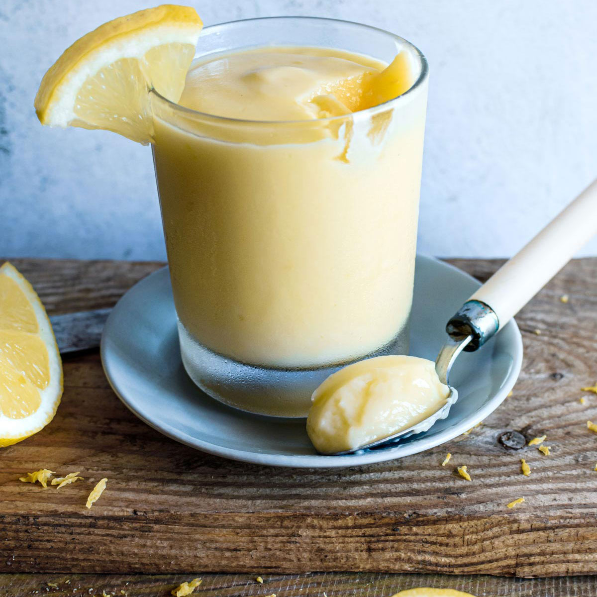

<!DOCTYPE html>
<html lang="en">
<head>
    <meta charset="UTF-8">
    <title>Document</title>
</head>
<body>
    
</body>
</html>

<h1> lemon_cream</h1>



<p> </p>

<h2>Ingredients</h2>
<ul>
    <li>3 medium eggs</li>
    <li>150g granulated sugar</li>
    <li>100 h lemon juice</li>
    <li>1 teaspoon vanilla extract</li>
    <li>lemon zest of 2 lemons</li>
    <li>150g butter, melted</li>
   
</ul>
<p></p>
<h2>Execution method</h2>
<ol>
     <li>In a pot add the eggs, sugar, lemon juice, vanilla extract, lemon zest, and transfer over low heat.</li>
     <li>Constantly mix with a hand whisk for 3-4 minutes, until the cream thickens.</li>
     <li>Transfer into a dosing container, add the butter cut into cubes, and beat with an immersion blender until the butter is dissolved.</li>
     <li>Refrigerate for 1 hour to cool.</li>
     <li>Serve with cupcakes, muffins, tarts.</li>
</ol>